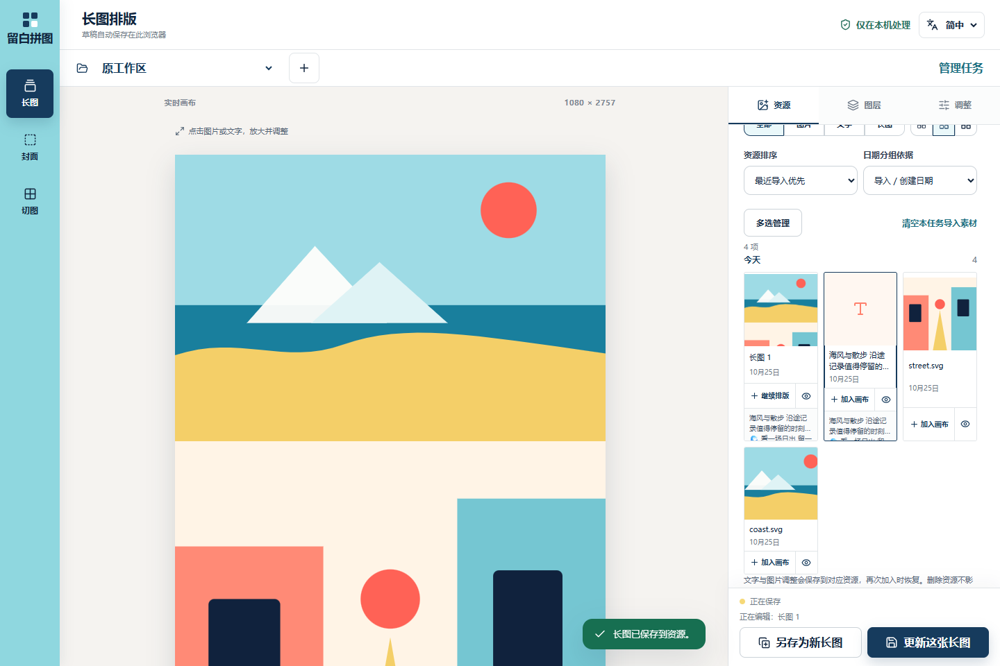

资源与排序


F01 操作式撤销 → R01 批量管理 → R02 时间排序 → R03 任务归属 → R04 富文本与 R05 真字体、共享渲染 → R06 图层交互。工作分支 codex/f01-r06。保留方向 2 的海军蓝、青色工具轨和独立编辑区。R07/R08 浮动、多风格 Emoji 延后。
| 项目 | 状态 | 实现与证据 |
|---|---|---|
| F01 | verified | operations.ts 合并本次受影响 ID；交错新增、编辑、二次删除、双图拆分有单测；清空后新增再撤销有浏览器回归。不是全局撤销历史。 |
| R01 | verified | ResourcePanel 多选、全选筛选结果、清空本任务素材、批量 PNG/JPG ZIP；保存事务完成后提示。删除保留画布/成品，撤销保留之后新增。ZIP 内容合计预算 200MiB。 |
| R02 | verified | resourceCatalog/photoMetadata 保留真实导入、文件修改、原始 EXIF 时间/偏移和批次；无时区保留本地字符串。自然名称、日期排序；本地日历互斥分组，定时/重新聚焦刷新。旧资源无日期保持未知。合成 JPEG 有/无偏移、未知时间与排序有回归。多选可按显示顺序追加，不重排原画布。 |
| R03 | verified | IndexedDB v3 增加任务索引，旧键保留为原工作区；新建/切换/命名/归档/恢复/复制素材。保存队列和切换屏障隔离任务；v2 升级单测及双任务刷新回归。 |
| R04/R05 | verified | 有限 Tiptap 节点及标记，version:1 JSON；混合字号、字体、颜色、列表、引用、对齐、Markdown 输入、Emoji。旧纯文本不自动解析。richText.ts runs 同时供 SVG/Canvas；字体加载后重新测量，导出等待字体。真实字体像素不同、混合颜色 PNG、选区与继续输入、图片文字保存重开有回归。 |
| R06 | verified | LayerList 单独选择按钮与手柄；选中后上下移动/并排，更多收纳次要动作。触控、键盘、鼠标使用 dnd-kit；位置过渡 180ms，减少动画时立即切换。390px 上移、触屏拖动、键盘排序、复制/删除/撤销有回归；中英文手机无横向溢出，提示避开保存栏。 |
下列为独立测试浏览器中的实现截图；图片为合成 SVG，不包含用户照片。资源栏截图保留了保存后自动滚动到新成品的状态。
npm test：80 项通过；npm run build 通过。浏览器回归：24 项，其中 23 项通过，桌面不适用的触屏专项跳过，手机专项通过。新增封面更新保持身份、清理素材后仍能导出富文本成品的桌面/手机回归。部署 Python：Windows 12 项通过，Linux 符号链接专项交给 CI。npm run test:ui；本机 npm 参数转发差异时用 node node_modules/@playwright/test/cli.js test --workers=2。截图用 node scripts/capture_editor.mjs，须先在 4185 启动本地 Vite。
字体源和许可证见 sources.json。两份全字符集文件共约 10.33MB，按使用加载；400 字重，粗体由浏览器合成；系统宋体/楷体/Emoji 不跨设备保证一致。富文本编辑器、EXIF、ZIP、HEIF 均拆分按需加载。
manual check remaining：真实 iPhone 软键盘与中文 IME、200 张真实相册性能、真实 HEIC 拍摄日期覆盖、多标签并发编辑、所有存储配额失败路径。浏览器仿真不能代替这些验证。全局撤销/重做、回收站、备份、浮动/多风格 Emoji 与更多 F 项未纳入本次交付。
工作分支先运行 GitHub Check；通过后推进 main，发布工作流再次验证并生成完整部署包。首轮 Linux 检查发现排序回归在草稿保存前立即刷新，测试已增加“本地草稿已保存”的明确等待；保存期间不把刷新视为已完成写盘。封面保存同步补齐更新/另存与当前目标提示，跨任务时丢弃失效的封面来源 ID。在线验证依据 /version.json 的 commit、页面及字体加载；不把 Release 发布等同于服务器已更新。最终工作流和线上版本结果见本次交付记录。